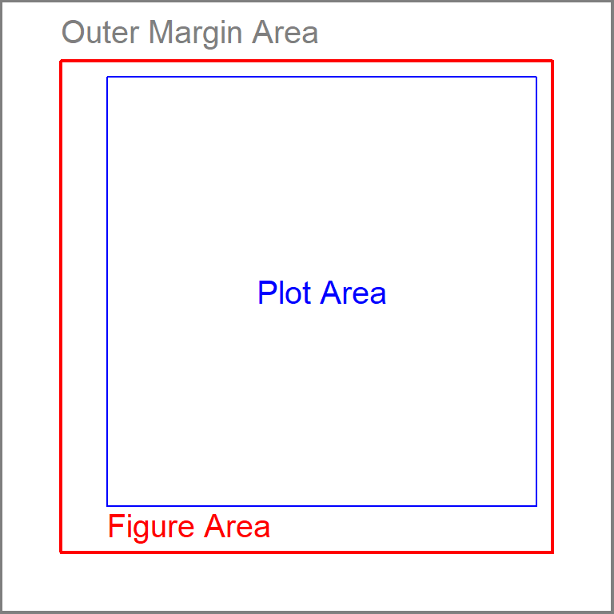
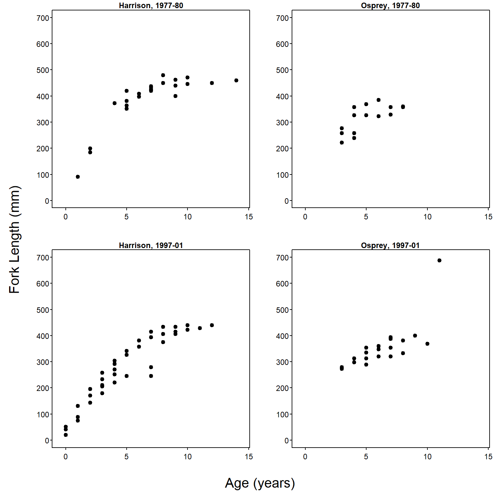

data(BullTroutRML2,package="FSAdata")Common Axis Labels on a Grid of Subplots
Several methods for modifying base graphics were shown in Ogle (2016), including simple layouts (side-by-side, one-over-the-other) of multiple plots. Creating common x- and y-axis labels for a grid of plots is described in this supplement. More complex layouts (e.g., plot in first row spans two columns or unequal sized plots) are described in this supplement.
A single function is used from dplyr in this supplement; thus, :: is used instead of loading the entire package.
The BullTroutRML2 data from FSAdata used in Ogle (2016) are also used here.
Common Axis Labels on a Grid of Subplots
A common need is to plot multiple graphics in a grid-like format with one axis label that serves as the label for each graph. This can be accomplished with arguments to par(), but the regions of a plot must be understood first.
Each plot consists of three regions – the plot area, the figure area, and the outer margin area (Figure 1). The plot area is where the points or bars will be graphed. The area between the plot area and the figure area is where the axis ticks, labels, and title will appear. The area outside of the figure area is the outer margin area and is generally used to provide extra space around the graphic or to place text.

In most instances (and the default), the width of the outer margin area is 0 on all sides of the figure area such that no outer margin area exists. The size of the outer margin area is set with oma= in par(), which takes a vector of four values to serve as widths of the four sides of the outer margin area, beginning with the bottom and moving counter-clockwise. The default is par(oma=c(0,0,0,0)). For example, margins that are two “lines” wide on the top and bottom and one “line” wide on the left and right may be set with par(oma=c(2,1,2,1)).
Common axis labels for multiple graphs can be placed in the outer margin area. In the example below, a 2-by-2 grid is created with mfrow() (as described in Ogle (2016)) and the bottom and left outer margin areas are increased to be two “lines” wide to allow for common x- and y-axis labels.
par(mfrow=c(2,2),oma=c(2,2,0,0))The four subplot areas are then populated with scatterplots (note that the x- and y-axis labels are set to empty strings to suppress labeling the axes)
xlmts <- c(-0.5,14.5)
ylmts <- c(0,700)
BTH1 <- BullTroutRML2 |> dplyr::filter(lake=="Harrison",era=="1977-80")
plot(fl~age,data=BTH1,main="Harrison, 1977-80",
xlab="",ylab="",pch=19,xlim=xlmts,ylim=ylmts)
BTO1 <- BullTroutRML2 |> dplyr::filter(lake=="Osprey",era=="1977-80")
plot(fl~age,data=BTO1,main="Osprey, 1977-80",
xlab="",ylab="",pch=19,xlim=xlmts,ylim=ylmts)
BTH2 <- BullTroutRML2 |> dplyr::filter(lake=="Harrison",era=="1997-01")
plot(fl~age,data=BTH2,main="Harrison, 1997-01",
xlab="",ylab="",pch=19,xlim=xlmts,ylim=ylmts)
BTO2 <- BullTroutRML2 |> dplyr::filter(lake=="Osprey",era=="1997-01")
plot(fl~age,data=BTO2,main="Osprey, 1997-01",
xlab="",ylab="",pch=19,xlim=xlmts,ylim=ylmts)The common x- and y-axis labels are then placed in the outer margin areas with mtext(). In this capacity, mtext() requires the text to be written as the first argument, a number in side= that indicates the margin on which to print the text,1 a number in line= that indicates the line on which to print the text (defaults to 0), and outer=TRUE to force the text into the outer margin area. Further note that las=0 is used for the y-axis label to force the text to be parallel to the y-axis. This is only needed because las=1 was set globally for producing this supplement.
1 The side= argument in mtext() uses the same numbering scheme as other functions – 1=bottom, 2=left, 3=top, 4=right.
mtext("Age (years)",side=1,line=0,outer=TRUE,cex=1.3)
mtext("Fork Length (mm)",side=2,line=0,outer=TRUE,cex=1.3,las=0)The combined code above creates the plot shown in Figure 2.

References
Ogle, D. H. 2016. Introductory Fisheries Analyses with R. CRC Press, Boca Raton, FL.